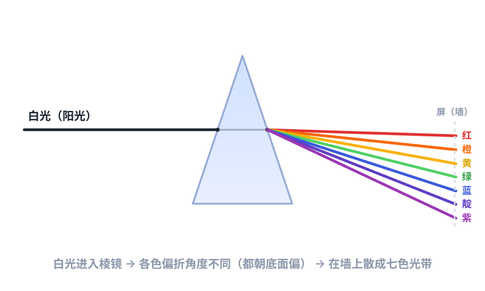
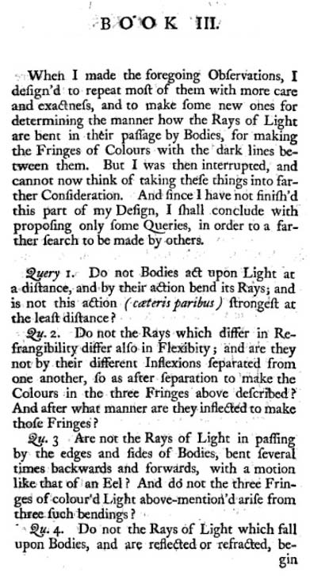

一、先从一个好问题开始
你有没有想过：天空为什么是蓝的？夕阳为什么是红的？彩虹那七种颜色，到底是从哪儿"变"出来的？在牛顿之前，几乎所有人都相信一个看起来很合理的说法——
白光是最"纯净"的光，像一张白纸。当白光照在物体上、或者穿过玻璃、水这些介质时，会被"弄脏"，染上颜色。也就是说，颜色是光被污染后才产生的副产品。
这个想法很符合直觉：白衬衫泡进有颜色的水里会变红变蓝，所以光大概也是这样。但牛顿不这么想。他要亲手做个实验，看看真相到底是什么。
二、那个著名的棱镜实验
1666 年，牛顿在剑桥（因为瘟疫回了老家）做了一件简单到不可思议的事：他拉上窗帘，在窗户板上钻了一个小孔，让一束细细的阳光射进屋里，再让这束光穿过一块玻璃做的三棱镜。

墙上没有出现一块白色的光斑，而是出现了一条彩虹色的光带——红、橙、黄、绿、蓝、靛、紫。玻璃把光"拆"开了。
三、关键的第二步：颜色还能再变吗？
如果只是到这儿，还不够说明问题。牛顿接着问：从棱镜出来的某一种颜色（比如纯红色），如果让它再穿过第二块棱镜，它会变成别的颜色吗？
实验结果很干脆：不会。纯红色的光穿过第二块棱镜，出来的还是红色，只是方向稍微偏了一点。紫色进来，紫色出去。每一种颜色都是"实心"的，没法再被拆开。
墙上的彩虹不是棱镜"制造"出来的，而是棱镜把本来就混在白光里的七种颜色分了家。白光不是纯净的，它恰恰是最"杂"的——是各种颜色混在一起。
四、"判决性实验"：让两片棱镜交叉
为了堵死所有可能的反驳，牛顿还设计了一个更漂亮、后来被称为"判决性实验"的装置：让第一片棱镜把光散成彩带，再用一个带小孔的光屏，只放其中一道颜色穿过，去打第二片棱镜（而且把第二片棱镜转了个方向）。
如果颜色真的是棱镜"染"上去的，那转个方向应该能让它再变；但结果仍是：红色进来、红色出去，位置变了，颜色没变。这就证明颜色来自光本身，而不是玻璃的"污染"。
五、我们身边的结论
顺着这个思路，牛顿一下子解释了很多现象：
- 为什么树叶是绿的？ 因为叶子把白光里的绿光反射进你的眼睛，把其他颜色都"吃"掉了（吸收了）。
- 为什么天是蓝的？ 大气里的分子更爱散射蓝光，于是蓝光铺满了整个天空。
- 为什么彩虹是弯的七色带？ 空中的小水滴，就是大自然免费送你的无数个微型棱镜。
一句话总结牛顿的光学核心：颜色不在物体里，而在光里；我们看到什么颜色，取决于物体"挑"了哪部分光送进我们的眼睛。
六、顺手发明了一台望远镜
牛顿研究颜色时，发现当时最先进的折射望远镜有个烦人的毛病：用透镜看亮星星，边缘总是带着彩色的边——因为不同颜色的光折射角度不同，没法在同一点聚焦。这个问题叫色差。

牛顿想：既然问题出在"透镜让颜色分散"，那干脆不用透镜聚光，改用镜子。光反射时不分散颜色，于是他造出第一台实用的反射望远镜——又短又清楚，还顺手解决了色差。今天最大的天文望远镜，用的还是这个思路。
七、牛顿环：光其实很"波"
牛顿还仔细观察了一个现象：把一块平玻璃压在一块凸玻璃上，中间会浮现一圈圈彩色的同心圆环，后人叫它牛顿环。
有趣的是，牛顿用他偏爱的"微粒说"（光是一粒粒小球）去解释它，虽然算出了圆环的规律，却没抓住真正的本质。真正说清牛顿环的，是后来的波动理论——光会像水波一样干涉、叠加。这件事提醒我们：即使是牛顿，也会把问题猜错方向；科学就是在一代代"修正"里前进的。
八、他留下的，不只是结论

1704 年，牛顿把三十年的光学研究写成《光学》出版。这本书最了不起的地方，不只是给出了结论，更在于他示范了什么是"用实验说话"：不空谈、不迷信权威，把一个现象控制到只剩一个变量，再下判断。
他在书末尾留了一长串"我还不知道"的问题。这些"不知道"，后来成了别人研究的起点。或许这正是科学最酷的地方——重要的不只是答案，还有敢于承认哪些还没答案。